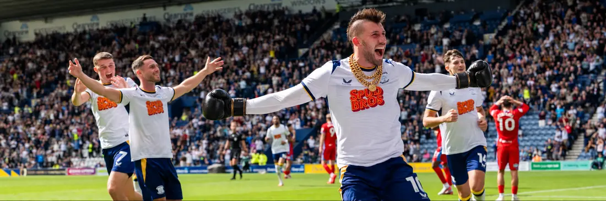

PNE v LINCOLN
Last Saturday we said North End would turn the corner. They beat Blackburn 2–1 — exactly as called. Watford checked the momentum, but Deepdale offers another chance to prove the derby win was a beginning rather than a beautiful interruption.
PNE 2–1 Blackburn
Two winning bets from three — and the score exactly right.
PNE 2–1 Lincoln
Same score. A fresh case. Absolutely no pressure…
🤍 The positive PNE case
The market believes again
North End are 11/8 favourites despite starting the day bottom. As against Blackburn, the market sees more in PNE than the league table does.
Lang is flying
Three league goals, including a derby brace and another at Watford. Callum Lang has scored in consecutive games and gives this rebuilt side a genuine focal point.
Lincoln invite pressure
The Imps have allowed an average of 9.5 corners in their two away league matches. PNE should have territory, deliveries and repeat attacks.
The new side is emerging
Gibbs, Mills and Kenny are pushing for bigger roles, with Wiley in line to return. The difficult pre-season is receding; Heckingbottom finally has choices.
📊 Numbers behind the optimism
📋 Team-news watch
Could Young Kenny get the call?
Caleb Wiley is in line to return at left wing-back if Andrija Vukčević misses out with a back issue. Liam Gibbs and Stanley Mills are pushing for starts, while Brad Potts and Ali McCann remain sidelined.
First-choice Imps should return
Lincoln made ten changes for Tuesday's cup defeat, so expect a much stronger and fresher side at Deepdale. Mason Melia is a doubt, while Tendayi Darikwa and Tom Hamer are expected to miss out.
- Three league games unbeaten
- Only one goal conceded across that run
- Likely to keep the game compact
🥊 Matchday editorial

Clubber Lang
Only if he starts17/2
The rebuild needed somebody to turn promise into goals. Lang has taken the job. His derby double gave North End their first league win, then he followed it with the goal at Watford. Three league goals, two scoring appearances in succession and one man arriving in fighting form.
Lincoln will be organised and difficult to prise open, which makes Lang's directness and willingness to attack the penalty area even more important. If he is named in the XI, 17/2 first goalscorer is the punchy play.
And with Lincoln's travelling contingent unlikely to test the structural limits of the Bill Shankly Kop, this should sound and feel overwhelmingly like North End's ground. Make the noise, take the initiative and give the compact red-and-white delegation a long journey home.
🎟️ The Matchday card
Preston to win
North End are favourites for a reason. Back the deeper post-window squad, home advantage and Lang's form to deliver a second successive Deepdale league win.
Both teams to score
PNE have scored in every home league match but still await a clean sheet. The combined home-and-away sample has produced BTTS in 75% of relevant games.
Preston to win 2–1
We are not claiming exact-score clairvoyance after last week — but the same pattern fits: PNE carry the greater attacking threat, yet the clean sheet remains hard to trust.
Same score. More history. COYW.
Lincoln deserve respect and may make this uncomfortable, but Preston have the stronger attacking form, a squad beginning to take shape and another Deepdale crowd ready to believe. The table still says trouble. The market and the direction of travel say opportunity. PNE 2–1.